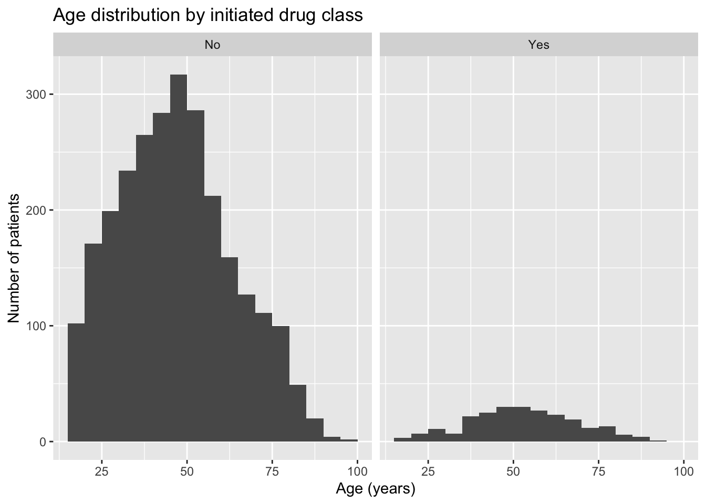
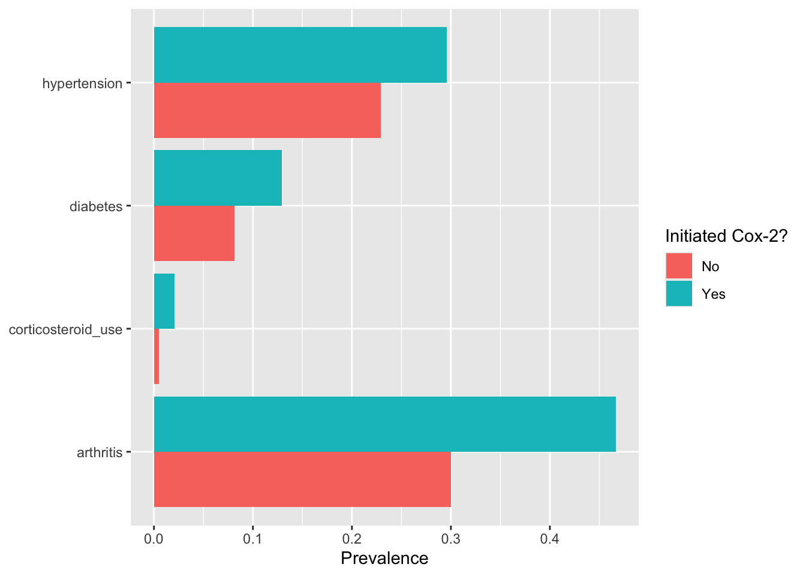

Chapter 2 Getting started with R and the NAMCS data
Every idea in this book is attached to code written in R. If you
have never used R before, this chapter introduces enough of the
tidyverse to read and write the data manipulations used in the
chapters that follow, describes the two example cohorts we will work
with for the rest of the semester, and ends by building a first
reusable function: a “Table 1” generator that will be useful in most
observational studies you conduct, in this course and after it. If you
already know R and the tidyverse well, skim this chapter for the two data
sets and read the Table 1 section, since table1_continuous() and
table1_categorical() are used again in later chapters.
2.1 R, RStudio, and the tidyverse
R is the language; RStudio is the editor most people use to write and run it. Appendix A walks through installing both, along with the packages this book relies on. Once they are installed, you will type or paste code into a script or, as here, into a code chunk inside an R Markdown document, and run it a line or a chunk at a time.
The basic vocabulary of R is small. An object is a name that holds a
value — a number, a piece of text, or, most often in this book, a
rectangular data set with rows and columns (a data frame, or in the
tidyverse a tibble). A function takes some input, does something
to it, and returns an output; mean(x) takes a vector x and returns
its average. A package is a bundle of functions someone else wrote
and shared, loaded with library(). The tidyverse is one such bundle,
or more precisely a collection of packages, including dplyr for
manipulating data frames and ggplot2 for plotting, built around a
shared design intended to make code read as a description of what you
want done rather than as instructions for how a computer should do it.
The setup chunk at the top of this chapter already did the loading for
us: source("R/setup.R") runs a script that attaches the tidyverse,
attaches the NAMCS package that supplies our example data, and builds
the two analysis cohorts, ns and sta, that we will use throughout the
book. Every chapter starts this way, so that it can be read and rendered
on its own without depending on anything that came before it.
The one piece of tidyverse syntax you should get comfortable with
immediately is the pipe, |>. It takes whatever is on its left and
passes it as the first argument to whatever is on its right, so that
x |> f() means the same thing as f(x). This lets you chain several
operations together and read them roughly left to right, top to bottom,
as a sequence of steps: start with the data, then filter it, then
summarize it. Four dplyr verbs will carry most of the weight in this
book: filter() keeps rows that satisfy a condition, select() keeps
particular columns, mutate() adds or changes a column, and
group_by() paired with summarise() computes a statistic separately
within each level of a grouping variable. A fifth, count(), is a
shortcut for counting rows within groups.
A few examples, all using the NSAID cohort ns:
## [1] 501## # A tibble: 3 × 3
## cox2_initiation age sex
## <fct> <dbl> <chr>
## 1 No 44 Male
## 2 Yes 58 Female
## 3 No 78 Female## # A tibble: 2 × 2
## age65 n
## <int> <int>
## 1 0 2381
## 2 1 501## # A tibble: 2 × 3
## cox2_initiation n mean_age
## <fct> <int> <dbl>
## 1 No 2642 47.3
## 2 Yes 240 53.4## # A tibble: 4 × 3
## sex cox2_initiation n
## <chr> <fct> <int>
## 1 Female No 1552
## 2 Female Yes 140
## 3 Male No 1090
## 4 Male Yes 100The first line counts how many patients in ns are 65 or older. The
second pulls out three columns and prints the first few rows. The third
uses mutate() to add a new column, age65, that recodes age as a 0/1
indicator for being 65 or older, and then counts how many patients land
in each category — the same recode-and-count pattern behind cox2_init
and pud, the two convenience columns R/setup.R added for us. The
fourth groups patients by which drug class they initiated and reports
the number of patients and mean age in each group — a first, very small
taste of the comparisons we will spend the rest of the book refining. The
fifth cross-tabulates sex against treatment group. None of this is
causal inference yet; it is description, but description is where an
analysis begins, and it is worth being fluent in it before adding
any causal machinery.
2.2 The NAMCS teaching cohorts
The data behind every example in this book come from the National
Ambulatory Medical Care Survey (NAMCS), an annual survey of visits to
office-based physicians in the United States. We use five years of
NAMCS, 2005 through 2009, assembled into two teaching cohorts by the
NAMCS R package. Both cohorts are built from real survey visits, but
the outcomes — peptic ulcer disease in one cohort, cardiovascular events
and survival times in the other — are simulated, so that we know there
is a true underlying data-generating process while still working with
realistic covariate structure. This is common in causal inference
teaching materials: it lets us illustrate methods with plausible clinical
questions without the ambiguity of relying on outcomes we cannot
validate.
The first cohort, ns, follows new users of NSAIDs — patients starting
either a nonselective NSAID or a Cox-2 selective inhibitor — and asks
whether the choice of drug class affects the risk of incident peptic
ulcer disease. glimpse() gives a quick sense of what is in it:
## Rows: 2,882
## Columns: 60
## $ year <fct> 2005, 2005, 2005, 2005, 2005, 2005, 2005, 20…
## $ phycode <chr> "200500013", "200500015", "200500015", "2005…
## $ patcode <chr> "2005000130008", "2005000150004", "200500015…
## $ region <fct> Northeast, Northeast, Northeast, Northeast, …
## $ northeast <fct> Yes, Yes, Yes, Yes, Yes, Yes, Yes, Yes, Yes,…
## $ midwest <fct> No, No, No, No, No, No, No, No, No, No, No, …
## $ specr <fct> Yes, Yes, Yes, Yes, Yes, Yes, Yes, Yes, Yes,…
## $ speccat <fct> Yes, Yes, Yes, Yes, Yes, Yes, Yes, Yes, Yes,…
## $ surgspec <fct> No, No, No, No, No, No, No, No, No, No, No, …
## $ medspec <fct> No, No, No, No, No, No, No, No, No, No, No, …
## $ cvdspec <fct> No, No, No, No, No, No, No, No, No, No, No, …
## $ age <dbl> 44, 58, 78, 23, 56, 68, 46, 40, 29, 61, 43, …
## $ raceblkoth <fct> No, No, No, No, No, No, No, No, No, No, No, …
## $ pripayer <fct> Yes, Yes, NA, NA, Yes, NA, NA, Yes, Yes, Yes…
## $ mcaidselfnc_imp <fct> No, No, No, No, No, No, Yes, No, No, No, No,…
## $ urbanrur0609 <fct> NA, NA, NA, NA, NA, NA, NA, NA, NA, NA, NA, …
## $ nonmetro0609 <fct> NA, NA, NA, NA, NA, NA, NA, NA, NA, NA, NA, …
## $ hinczip0609 <fct> NA, NA, NA, NA, NA, NA, NA, NA, NA, NA, NA, …
## $ lowinczip0609 <fct> NA, NA, NA, NA, NA, NA, NA, NA, NA, NA, NA, …
## $ pctpov0609 <fct> NA, NA, NA, NA, NA, NA, NA, NA, NA, NA, NA, …
## $ hipovzip0609 <fct> NA, NA, NA, NA, NA, NA, NA, NA, NA, NA, NA, …
## $ pctbamore0609 <fct> NA, NA, NA, NA, NA, NA, NA, NA, NA, NA, NA, …
## $ arthritis <fct> No, No, No, No, Yes, Yes, No, No, Yes, Yes, …
## $ asthma <fct> No, No, No, No, No, No, No, No, Yes, No, No,…
## $ cancer <fct> No, No, No, No, No, No, No, Yes, No, No, No,…
## $ cerebrovascular_disease <fct> No, No, No, No, No, No, No, No, No, No, No, …
## $ chronic_kidney_disease <fct> No, No, No, No, No, No, No, No, No, No, No, …
## $ heart_failure <fct> No, No, No, No, No, No, No, No, No, No, No, …
## $ chronic_pulmonary_disease <fct> No, No, No, No, No, No, No, No, No, No, No, …
## $ depression <fct> No, No, No, No, No, No, No, No, No, No, No, …
## $ diabetes <fct> No, No, No, No, No, Yes, Yes, No, No, Yes, N…
## $ hyperlipidemia <fct> No, No, No, No, No, No, No, No, No, Yes, No,…
## $ hypertension <fct> No, No, No, No, No, No, No, No, No, Yes, No,…
## $ coronory_artery_disease <fct> No, No, No, No, No, No, No, No, No, No, No, …
## $ osteoporosis <fct> No, No, No, No, No, No, No, No, No, No, No, …
## $ totchron_imp <fct> No, No, No, No, Yes, NA, Yes, Yes, NA, NA, Y…
## $ multchron_imp <fct> No, No, No, No, No, Yes, No, No, Yes, Yes, N…
## $ surgflare_imp <fct> No, No, No, No, No, Yes, No, No, No, No, No,…
## $ surgchron_imp <fct> No, No, No, No, Yes, Yes, Yes, No, No, No, N…
## $ bpsys <fct> NA, NA, NA, NA, NA, NA, NA, NA, NA, NA, NA, …
## $ bpdias <fct> NA, NA, NA, NA, NA, NA, NA, NA, NA, NA, NA, …
## $ tobacco_imp <fct> No, No, No, No, Yes, No, No, No, Yes, No, Ye…
## $ bp_stage2 <fct> No, No, No, No, No, No, Yes, Yes, No, No, No…
## $ bp_stage1 <fct> No, No, No, No, No, No, No, No, No, Yes, No,…
## $ bp_prehtn <fct> No, Yes, Yes, Yes, Yes, Yes, No, No, No, No,…
## $ cox2 <fct> No, Yes, No, No, No, No, No, No, No, No, No,…
## $ cox2_initiation <fct> No, Yes, No, No, No, No, No, No, No, No, No,…
## $ newnsnsaid <fct> Yes, No, Yes, Yes, Yes, Yes, Yes, Yes, Yes, …
## $ anti_hypertensive_use <fct> No, No, No, No, No, No, Yes, No, No, Yes, No…
## $ statin_use <fct> No, No, No, No, No, No, No, No, No, No, No, …
## $ h2_antagonist_use <fct> No, No, No, No, No, No, No, No, Yes, No, No,…
## $ ppi_use <fct> No, No, No, No, No, Yes, No, No, No, No, No,…
## $ aspirin_use <fct> No, No, No, No, No, No, No, No, No, Yes, No,…
## $ anti_coagulant_use <fct> No, No, No, No, No, No, No, No, No, No, No, …
## $ corticosteroid_use <fct> No, No, No, No, No, No, No, No, No, No, No, …
## $ sex <chr> "Male", "Female", "Female", "Male", "Male", …
## $ race <fct> White, White, White, White, White, White, Wh…
## $ incident_pud <fct> No, No, Yes, No, No, No, Yes, No, No, No, No…
## $ cox2_init <int> 0, 1, 0, 0, 0, 0, 0, 0, 0, 0, 0, 0, 0, 0, 0,…
## $ pud <int> 0, 0, 1, 0, 0, 0, 1, 0, 0, 0, 0, 0, 0, 0, 0,…There are 2882 patients in ns, of whom
240 initiated a Cox-2 selective
inhibitor. Alongside the treatment indicator cox2_initiation and the
outcome incident_pud, the cohort carries baseline covariates: age, sex,
race, region, calendar year, a set of chronic conditions, and
comedications like corticosteroids, aspirin, and gastroprotective drugs.
R/setup.R already added two convenience columns, cox2_init and pud,
which are the same information as cox2_initiation and incident_pud
recoded as 0/1 integers — most of the model-fitting functions we write
later expect a numeric 0/1 treatment or outcome rather than a factor.
The second cohort, sta, follows patients who did or did not initiate a
statin, and asks whether statin initiation reduces the risk of a
cardiovascular event. Because a cardiovascular event can happen — or
fail to happen — at any point over years of follow-up, this cohort looks
a little different:
## Rows: 6,165
## Columns: 39
## $ year <dbl> 2005, 2005, 2005, 2005, 2005, 2005, 2005, 20…
## $ region <fct> Northeast, Northeast, Northeast, Northeast, …
## $ age <dbl> 39, 46, 58, 32, 36, 36, 33, 72, 70, 84, 43, …
## $ arthritis <fct> No, No, No, No, No, No, No, No, No, No, No, …
## $ asthma <fct> No, No, No, No, No, No, No, No, No, No, No, …
## $ cancer <fct> No, No, No, No, No, No, No, No, No, No, No, …
## $ cerebrovascular_disease <fct> No, No, No, No, No, No, No, No, No, No, No, …
## $ chronic_kidney_disease <fct> No, No, No, No, No, No, No, No, No, No, No, …
## $ heart_failure <fct> No, No, No, No, No, No, No, Yes, No, No, No,…
## $ chronic_pulmonary_disease <fct> No, No, No, No, No, No, No, No, No, No, No, …
## $ depression <fct> No, No, No, No, No, No, No, No, No, No, Yes,…
## $ diabetes <fct> No, Yes, No, No, No, No, Yes, No, No, No, No…
## $ hyperlipidemia <fct> No, No, Yes, No, No, No, No, No, No, No, No,…
## $ hypertension <fct> No, No, No, No, No, No, No, Yes, No, Yes, No…
## $ coronory_artery_disease <fct> No, No, No, No, No, No, No, No, No, No, No, …
## $ obesity <fct> No, No, No, No, No, No, No, No, Yes, No, No,…
## $ osteoporosis <fct> No, No, No, No, No, No, No, No, No, No, No, …
## $ tobacco_use <fct> No, No, No, No, Yes, No, No, No, No, No, No,…
## $ statinpotency_use <fct> No treatment, No treatment, No treatment, No…
## $ nsaid_use <fct> No, No, No, No, No, No, No, No, No, No, No, …
## $ anti_hypertensive_use <fct> No, Yes, No, No, No, No, No, No, No, Yes, No…
## $ h2_antagonist_use <fct> No, No, No, No, No, No, No, No, No, No, No, …
## $ ppi_use <fct> No, No, No, No, No, No, No, No, No, No, No, …
## $ aspirin_use <fct> No, No, No, No, No, No, No, No, No, No, No, …
## $ anti_coagulant_use <fct> No, No, No, No, No, No, No, No, No, No, No, …
## $ corticosteroid_use <fct> No, No, No, No, No, No, No, No, No, No, No, …
## $ mi <fct> No, No, No, No, No, No, No, No, No, No, No, …
## $ sex <chr> "Male", "Female", "Male", "Female", "Female"…
## $ race <fct> White, White, White, White, White, White, Wh…
## $ statin_use <fct> No Treatment, No Treatment, No Treatment, No…
## $ cv_time <dbl> NA, NA, NA, NA, NA, NA, NA, 8.64, NA, NA, NA…
## $ death_time <dbl> NA, NA, NA, NA, 2.09, NA, NA, NA, NA, NA, NA…
## $ nonadherence <dbl> NA, NA, NA, NA, NA, 9.60, NA, NA, NA, 1.35, …
## $ cv_indicator <dbl> NA, NA, NA, NA, 0, NA, NA, 1, NA, NA, NA, NA…
## $ loss_fu_time <dbl> 0.5, 1.8, 3.1, 2.9, NA, NA, 7.0, NA, 2.2, 2.…
## $ cv_death_time <dbl> NA, NA, NA, NA, 2.09, NA, NA, 8.64, NA, NA, …
## $ statin <int> 0, 0, 0, 0, 0, 0, 0, 0, 0, 0, 0, 0, 1, 0, 0,…
## $ event_time <dbl> 0.50, 1.80, 3.10, 2.90, 2.09, 10.00, 7.00, 8…
## $ cv_event <int> 0, 0, 0, 0, 0, 0, 0, 1, 0, 0, 0, 0, 0, 0, 0,…There are 6165 patients in sta, and 838
of them initiated a statin. Instead of a single yes/no outcome measured
at a fixed time, sta carries several time variables — cv_time,
death_time, loss_fu_time — recording, in years, when each event
would have occurred had it occurred at all (a patient who never has the
event has a missing cv_time). R/setup.R combines these into a single
event_time, the time to whichever of a cardiovascular event, death,
loss to follow-up, or the administrative end of the study (admin_end,
set to 10 years) happened first, and a cv_event indicator for whether
that first thing was actually the cardiovascular event. We will not need
any of that machinery until Chapter 10, on survival outcomes and
censoring. For now it is enough to know that sta is larger than ns,
that its outcomes accrue over years of follow-up, and that it is the
cohort the book turns to once follow-up time matters.
Appendix B collects a full codebook for both cohorts, generated directly from the data rather than typed out by hand, so it will always match what is actually in the package. If you are ever unsure what a variable means, that is the place to check.
2.3 Plotting with ggplot2
ggplot2 builds a plot by mapping columns of data to visual properties
— an x-axis, a y-axis, a color — and then adding layers on top that
say how to draw it: as points, bars, lines, or histograms. Every
ggplot2 call in this book starts the same way, with ggplot(data, aes(...)) naming the data and the mapping, followed by one or more
geom_*() layers.
A natural first question about ns is whether Cox-2 initiators and
nonselective NSAID initiators look similar in age. A histogram, faceted
by treatment group, answers this directly:
ggplot(ns, aes(age)) +
geom_histogram(binwidth = 5, boundary = 0) +
facet_wrap(~cox2_initiation) +
labs(x = "Age (years)", y = "Number of patients",
title = "Age distribution by initiated drug class")
Figure 2.1: Age distribution by initiated drug class.
The two distributions are not identical, so age could confound any simple comparison of peptic ulcer risk between the groups, since age is plausibly related both to which drug a physician chooses to prescribe and to the baseline risk of peptic ulcer disease.
A second question is whether the two groups differ in their burden of relevant comorbidities and comedications. A bar chart of prevalence, one bar per condition per group, is a compact way to see several comparisons at once:
ns |>
select(cox2_initiation, arthritis, diabetes, hypertension,
corticosteroid_use) |>
pivot_longer(-cox2_initiation, names_to = "condition") |>
group_by(cox2_initiation, condition) |>
summarise(prevalence = mean(value == "Yes"), .groups = "drop") |>
ggplot(aes(condition, prevalence, fill = cox2_initiation)) +
geom_col(position = "dodge") +
labs(x = NULL, y = "Prevalence", fill = "Initiated Cox-2?") +
coord_flip()
Figure 2.2: Prevalence of selected comorbidities and comedications by initiated drug class.
Arthritis, in particular, is more common among Cox-2 initiators than among nonselective NSAID initiators. This is clinically unsurprising, since Cox-2 selective drugs are often chosen for patients thought to be at higher gastrointestinal risk, and it is the kind of imbalance that will concern us once we take up adjustment for confounding.
2.4 Your first reusable functions: Table 1
Nearly every observational paper opens with a table comparing the characteristics of the groups under comparison, conventionally called “Table 1.” It is descriptive rather than causal, but it is where a reader first sees whether the groups appear comparable, and often where a reader first suspects that they are not. Because some version of this table is needed for nearly every study, we will write it once, as a function, and reuse it for the rest of the book.
A function in R is defined with function(...), naming its arguments,
followed by a body that computes something from them and returns it (by
default, the value of the last expression evaluated). Writing your own
functions will save a great deal of time, because it turns a block of
code that would otherwise be copied, pasted, and slightly mis-edited
into something written and tested once.
A Table 1 needs to summarize two kinds of variables differently: continuous variables as a mean and standard deviation, and categorical variables as a count and percentage, both computed separately within each level of a grouping variable (here, treatment group). We will write one function for each.
For continuous variables, the recipe is: reshape the requested columns
into a long format with one row per patient per variable, group by the
grouping variable and the variable name, compute "mean (sd)" as a
formatted string, and reshape back so that each treatment group is its
own column.
table1_continuous <- function(data, vars, by) {
data |>
select(all_of(c(by, vars))) |>
pivot_longer(all_of(vars), names_to = "variable") |>
group_by(.data[[by]], variable) |>
summarise(
stat = sprintf("%.1f (%.1f)",
mean(value, na.rm = TRUE), sd(value, na.rm = TRUE)),
.groups = "drop"
) |>
pivot_wider(names_from = all_of(by), values_from = stat)
}A couple of details are worth pointing out because they recur throughout
this book. all_of(vars) tells select() and pivot_longer() that
vars is a character vector of column names supplied by the caller,
rather than a single column to look up literally, which is what allows
the function to work for any set of variables rather than only the ones
we happen to try first. .data[[by]] does the analogous thing for
group_by(),
letting the name of the grouping column be a string passed in as an
argument rather than hard-coded. Together these are what make the
function reusable: nothing about age or treatment group is written
into the body of table1_continuous() itself.
Categorical variables follow the same shape, but count levels instead of averaging values:
table1_categorical <- function(data, vars, by) {
data |>
select(all_of(c(by, vars))) |>
mutate(across(all_of(vars), as.character)) |>
pivot_longer(all_of(vars), names_to = "variable", values_to = "level") |>
count(.data[[by]], variable, level) |>
group_by(.data[[by]], variable) |>
mutate(stat = sprintf("%d (%.1f%%)", n, 100 * n / sum(n))) |>
ungroup() |>
select(-n) |>
pivot_wider(names_from = all_of(by), values_from = stat)
}Both functions are saved in R/table1.R so that later chapters can pull
them in with a single source() call rather than redefining them. Let’s
use them on the NSAID cohort, comparing Cox-2 initiators to nonselective
NSAID initiators on age and on five categorical covariates, and format
the results with knitr::kable() for a readable table:
| variable | No | Yes |
|---|---|---|
| age | 47.3 (16.6) | 53.4 (15.7) |
table1_categorical(
ns,
vars = c("sex", "arthritis", "aspirin_use", "ppi_use", "corticosteroid_use"),
by = "cox2_initiation"
) |> knitr::kable()| variable | level | No | Yes |
|---|---|---|---|
| arthritis | No | 1849 (70.0%) | 128 (53.3%) |
| arthritis | Yes | 793 (30.0%) | 112 (46.7%) |
| aspirin_use | No | 2559 (96.9%) | 231 (96.2%) |
| aspirin_use | Yes | 83 (3.1%) | 9 (3.8%) |
| corticosteroid_use | No | 2629 (99.5%) | 235 (97.9%) |
| corticosteroid_use | Yes | 13 (0.5%) | 5 (2.1%) |
| ppi_use | No | 2562 (97.0%) | 229 (95.4%) |
| ppi_use | Yes | 80 (3.0%) | 11 (4.6%) |
| sex | Female | 1552 (58.7%) | 140 (58.3%) |
| sex | Male | 1090 (41.3%) | 100 (41.7%) |
Look at the two tables side by side. Cox-2 initiators are, on average, older than nonselective NSAID initiators, and a substantially larger share of them have a history of arthritis. Neither table tells us whether Cox-2 selectivity affects peptic ulcer risk, a question that occupies the rest of the book, but both are the kind of descriptive evidence an epidemiologist examines first, and both came from two functions short enough to read line by line.
2.5 Exercises
- Build both a continuous and a categorical Table 1 for the statin
cohort, comparing statin initiators to non-initiators
(
statin_use) onageand ondiabetes,hypertension, andtobacco_use. Usetable1_continuous()andtable1_categorical()exactly as they were used above, just pointing them atstaand a differentbyvariable and variable list. - The age-by-group histogram in the Plotting with ggplot2 section was
built for the NSAID cohort. Adapt that code to plot the distribution
of
agebystatin_usein thestacohort instead. Do the two statin groups look as similar in age as the two NSAID groups did? - Using
count(), tabulate the number of visits per calendaryearseparately for statin initiators and non-initiators insta. Is the number of statin initiators roughly constant across 2005–2009, or does it trend up or down?